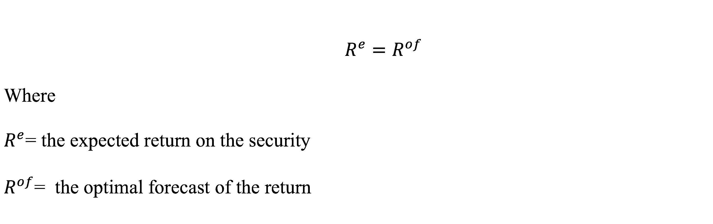
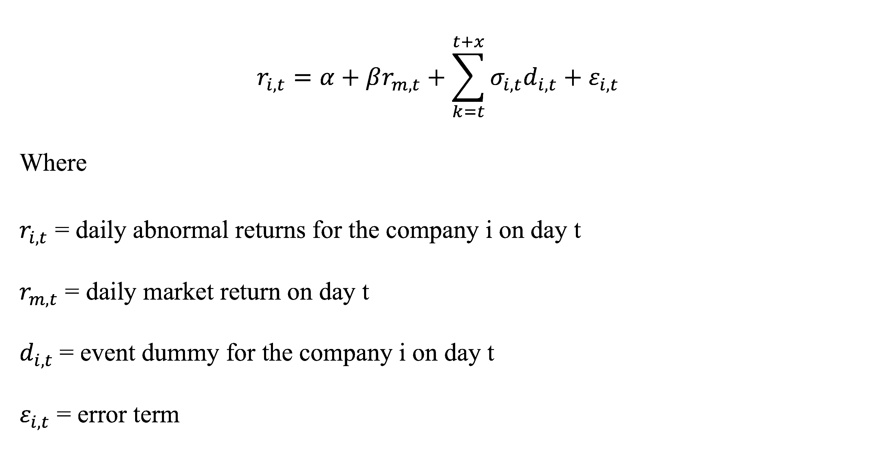

Financial Impact of Sustainability Reporting
Thesis for B.A. Arts and Sciences
2023
I investigated the financial impact of sustainability reporting by analyzing the abnormal returns of stock prices around the releases of sustainability reports issued by private companies, with a particular focus on environmental sustainability.
---
Global leading banks declared their commitments to achieving net-zero carbon emissions by 2050 at UN COP26 held in 2021. However, these banks later realized that it is not currently realistic financially to cease investing in the fossil fuel industry (Marsh, 2022), despite the fact that the non-renewable energy industry is responsible for over half of the CO2 emissions on the earth (Climate Watch).
The fashion industry, which accounts for approximately 10% of global greenhouse gas emissions (United Nations, 2018), declared to achieve the net-zero carbon emissions by 2050 and make a 100% commitment to renewable energy and environmentally friendly materials by 2030 (Friedman, 2022). However, U.N. Framework Convention on Climate Change reports, “emissions from textile manufacturing are projected to skyrocket by 60% by 2030” (Paton, 2022).
Particularly for private actors such as the energy and fashion and luxury goods industries, whose business models are historically built upon the extraction of natural resources and constant consumption, climate crisis is a pressing challenge.
Presenting sustainability reports to companies’ stakeholders is one effective way to disseminate their contribution to the environmental mitigation (Du et al., 2017, pp. 313-314). Sustainability reports contain qualitative and quantitative non-financial information about companies’ ESG aspects (p. 313).
On the other hand, critics of sustainability reporting point out the absence of rigorous rules, shared definitions, and measures about the terms such as ESG performance and sustainability (Dordon, 2022).
Do ESG reports provide short-term financial benefits to energy and luxury goods companies?
Are there abnormal market returns surrounding the release of sustainability report?
The assumption behind this inquiry is that corporations generally view environmental sustainability either as a factor to improve their public images or as a risk for their business operations, and evidence of financial benefits associated with a deeper commitment to environmental sustainability will be effective for prompting necessary changes.
What did I do?
To find answers to these and related questions, I studied in detail the academic literature at the intersection of international finance, macroeconomics, business, public policy, and data science. I then conducted my own research and analyzed statistical results to build upon previous work.
How did I realize the research?
I collected, cleaned, and analyzed daily stock price data of chosen companies by Bloomberg Terminal. This research uses time series data on the daily stock prices of five publicly traded companies in the energy and luxury goods industry (n) listed either on NYA, CAC40, or Swiss Market, yielding 310 (N=n*T) observations.
I employed the Efficient Market Hypothesis (EMH) for the theoretical framework and Capital Asset Pricing Model (CAPM) for the empirical methodology, implementing the Event Study technique. The following equation represents the statement of EMH that the expected return on a financial security will equal the optimal forecast of its return.

The following regression represents CAPM, examining the relationship between daily stock returns, benchmark returns, and an event dummy variable. The event dummy variable takes a value of 1 during the event window and 0 otherwise.

The results of the statistical analysis indicated the weak correlation between the release of sustainability reports and stock price fluctuations. One significant reason for this result, as suggested by prior research, can be that the disclosure of sustainability reports has become a common practice among publicly traded companies.
Is technology the solution?
The considerable challenge is greenwashing, wherein companies claim, with misleading information, that they are more environmentally responsible than they actually are. Although there are various ESG-related evaluations on companies by financial data vendors, including Refinitiv, Bloomberg, LSEG, aiming to establish shared quantitative measures, their evaluation metrics and methodologies are not public, therefore, ambiguous. Some organizations build an AI-powered model to track greenwashing using text-based information, but is it the solution when there is not even a fixed meaning to be 'sustainable'?
Why is this important?
This information is valuable in measuring the impact of sustainability reporting in today‘s information environment and bridging between the urgent needs of sustainability actions and competitiveness, profitability pursued in the private sector. To learn more about the method and findings of my research, read the abstract below or check out the whole thesis:
Do ESG Reports Financially Benefit Energy and Luxury Goods Companies?
Abstract:
Climate change is an urgent issue across all sectors, particularly impacting private companies reliant on the extraction and constant consumption of natural resources, such as the energy and fashion industries. Publicly listed companies often publish sustainability reports to disclose non-financial performance and enhance their social image. However, terms like sustainability and ESG (Environmental, Social, and Corporate Governance) performance carry varied meanings across contexts due to a lack of shared definitions, and the actual results of sustainability efforts are often overlooked. Legislative efforts in recent years aim to set standards for private companies' environmental responsibility and classify financial products based on environmental sustainability commitments. Nevertheless, factors like commercial success and CEOs' fiduciary duty can hinder environmentally sound decision-making in business operations. What if sustainability reports do yield short-term financial benefits? What if abnormal stock market returns occur around the release of sustainability reports? Would this incentivize companies to improve the quality of their reports and measure their environmental responsibility quantitatively, more critically and scientifically? This research analyzes stock market returns before and after the publication of sustainability reports by three energy companies and two luxury goods companies listed on the New York Stock Exchange (NYSE), Euronext Paris, or the Swiss Stock Exchange. The findings indicate insufficient statistically significant correlations between report publication and stock market reaction to fully validate the hypothesis. Possible explanations include investors' focus on short-term returns and the prevalence of sustainability reports among listed companies, reducing the impact of report disclosure on investors. Future research will explore these assumptions to validate the findings.
ABNORMAL RETURN AROUND THE SUSTAINABLE REPORT RELEASE
(By the Author) Data Source: Bloomberg Terminal
DISCUSSION BASED ON RESEARCH FINDINGS

(By the Author)